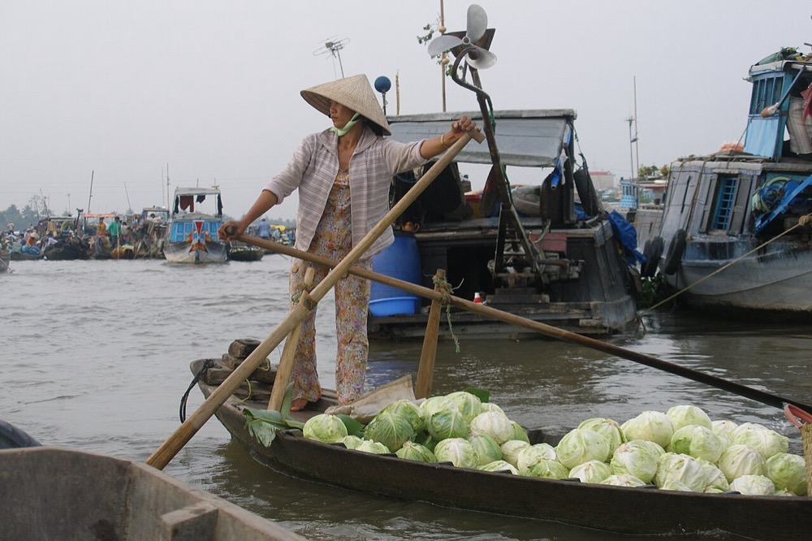
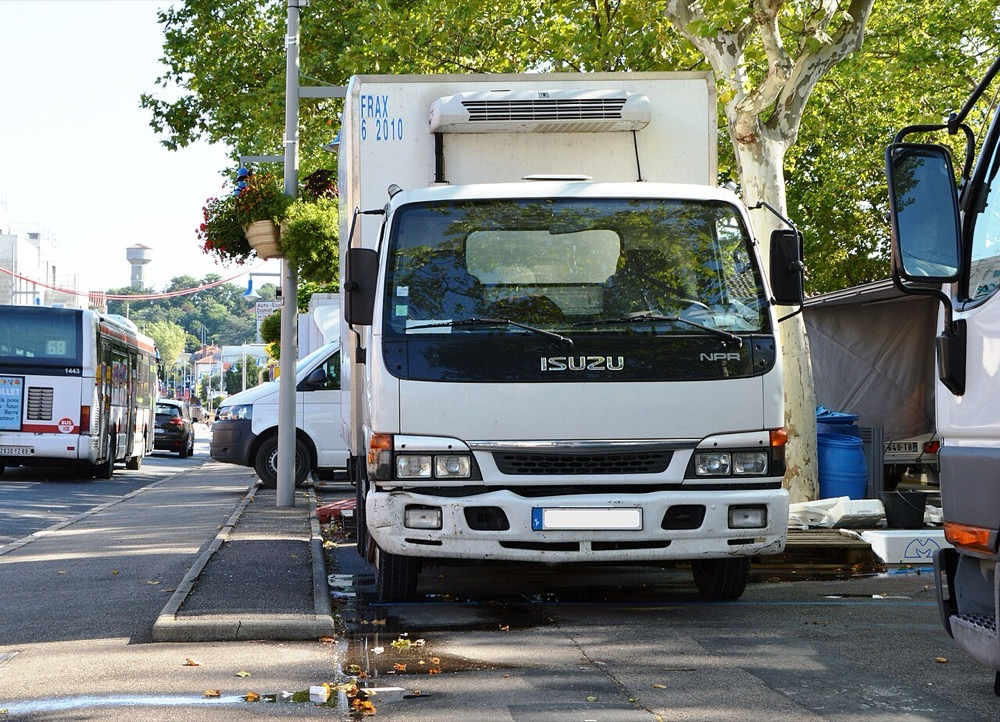

日本国内の冷蔵倉庫の取得は案05で扱った。本ページは東南アジアの産地と都市を結ぶ低温物流を扱い、国内の倉庫事業とは市場・競合・資金の組み方が異なる。
ベトナムとインドネシアの水産・青果の産地に、冷凍冷蔵の拠点と冷凍車両を配置する。産地の加工業者と輸出業者から保管料と輸送料を受け取り、都市の小売と日系食品メーカーへの配送を一括で提供する。拠点は建物と設備を担保にしたプロジェクトファイナンスで建設し、1拠点ずつ積み上げる。
ASEANのコールドチェーン物流市場は、同じ調査会社の版により2025年に99.9億ドルとする推計と188.1億ドルとする推計がある1。新しい版は2031年に244.3億ドル、年率4.94%の成長としている1。物流専門紙は2026年に198億ドル規模と報じている2。1ドル150円で約1.5兆〜2.8兆円にあたる。
| 国 | 冷蔵能力 | 範囲 | 出典 |
|---|---|---|---|
| タイ | 94万トン | 公営と民間の合計 | 3 |
| ベトナム | 約130万パレット | 2024年の設計能力 | 4 |
| インドネシア | 37万200トン | 主要企業のみ | 3 |
| ミャンマー | 8万8,148トン | 主要企業のみ | 3 |
タイ・インドネシア・ミャンマーは2019年の報告書の値で、単位と範囲が国ごとに異なる。マレーシアとフィリピンの値は確認できなかった。
世界の冷蔵倉庫の能力は2020年に7億1,900万立方メートルである。最大は米国の1億5,600万立方メートル、次いでインドの1億5,000万立方メートル、中国の1億3,100万立方メートルである5。
ベトナムの冷蔵倉庫の市場は2024年に2億200万ドルで、需要は2021〜2024年に年率12.4%で伸びた4。同じ期間に設計能力は29.6%増え、新設は27施設である4。2028年の能力は170万パレットを超える見込みである4。
推計 ベトナムの1パレット当たり年間保管収入 ＝ 2億200万ドル ÷ 130万パレット ≒ 155ドル ≒ 2.3万円
設計能力のすべてが稼働した場合の平均で、実際の稼働率は確認できなかった。日本国内の冷蔵倉庫の1設備トン当たり約4.2万円（案05の推計）より低い。
| 年 | 変化 | 数値 |
|---|---|---|
| 2000〜2019年 | インドネシアの食品ロスと食品廃棄 | 年2,300万〜4,800万トン。食品ロスの段階で年106兆〜205兆ルピア6 |
| 2019年 | ERIAの報告書 | ベトナムでは農産物の産地で冷蔵車両と冷蔵倉庫が不足している3 |
| 2021〜2024年 | ベトナムの冷蔵倉庫 | 需要は年率12.4%増、能力は29.6%増4 |
| 2023年 | ベトナムの冷蔵倉庫業の純利益率 | 2022年の1.6%から-1.5%に低下4 |
| 2025〜2028年 | 日系企業のベトナムとマレーシアでの新設 | ロンハウ工業団地に約2.2万パレット7、バクニン省に1万1,600パレット8、クアラルンプール近郊に延床1万1,453平方メートル9 |
ベトナムでは都市近郊の冷蔵倉庫の新設が続き、2023〜2025年は稼働率が一時的に低下した4。一方で産地では冷蔵車両と倉庫が不足している3。インドネシアでは民間と政府の冷蔵能力のうち外部に賃貸されるのは5〜10%に留まるとの業界団体の発言がある10。都市の倉庫は供給過剰に近く、産地の第三者向けの能力は不足している。参入する場所は都市ではなく産地である。

| 種類 | 事業者 | 動き |
|---|---|---|
| ベトナムの冷蔵倉庫 | Transimex・Lineage・Hung Vuong・AJ Total・Hanaro TNS | 上位10社で能力の46.4%を占める4 |
| ベトナムの冷凍輸送 | ABA Cooltrans、Dai Tan Logistics | 上位10社で75.0%を占める。冷凍トラックは31社で1,499台4 |
| 日系物流 | ニチレイロジグループ | ASEANで約25万トンの低温設備を運営する11 |
| 日系物流 | 五十嵐冷蔵、鴻池運輸 | ベトナム南部と北部で冷凍冷蔵倉庫を建設中。鴻池運輸の拠点は北部で初めての日系の冷凍冷蔵倉庫となる78 |
| 日系不動産 | 霞ヶ関キャピタル | マレーシアで冷凍自動倉庫を開発する9 |
日系の新設はいずれも工業団地や都市近郊にあり、日系の荷主の保管を主な対象とする。産地の加工業者を対象とする日系の拠点は確認できなかった。
首位の条件 ベトナムの冷凍輸送は上位への集中が進んでいるが、冷蔵倉庫の上位10社は46.4%で分散している4。産地型の拠点で首位になる条件は3つである。①水産と青果の主要産地に、競合より先に拠点を置くこと。②拠点と冷凍車両を同じ会社で運営し、産地から都市と港までを一括で受託すること。③輸出業者と複数年の保管契約を結び、プロジェクトファイナンスの返済原資にすること。
1年目は拠点を建設しない。冷凍車両による輸送で荷主を確保し、1つ目の産地拠点の計画と資金の組成を行う。

| 用途 | 金額 | 検証すること |
|---|---|---|
| ベトナム法人の設立と物流事業の許認可 | 500万円 | 外資の出資比率の上限と取得までの期間 |
| 冷凍車両5台のリース | 800万円 | 1台当たりの稼働率と運賃 |
| 人件費 日本人1名、現地6名 | 1,500万円 | 現地の運行管理者の確保 |
| 産地の調査と拠点の事業計画 | 600万円 | 産地の加工業者が保管料を払う意思と金額 |
| 温度記録システム | 300万円 | 輸出業者の品質監査の基準を満たせるか |
| 予備費 | 300万円 | |
| 合計 | 4,000万円 |
| 月 | 計画 |
|---|---|
| 1〜3月目 | ベトナム法人を設立する。メコンデルタの水産加工業者と青果の産地の業者30社を調査する |
| 4〜6月目 | 冷凍車両5台で、日系食品メーカーと小売の配送を受託する |
| 7〜9月目 | 産地の加工業者5社と、拠点完成後の保管の基本合意を結ぶ |
| 10〜12月目 | 5,000パレットの産地拠点の事業計画を作成し、日本の政策金融機関と国際開発金融機関に融資を打診する |
1年目の判定基準は、冷凍車両の稼働率70%以上と、拠点の稼働率60%以上に相当する保管の基本合意の2つである。
| 段階 | 資金 | 金融機関 | 条件 |
|---|---|---|---|
| 1年目 | 創業融資、車両リース | 日本政策金融公庫 国民生活事業、リース会社 | 日本の親会社が借り、ベトナム法人に出資する |
| 2〜3年目 | 1拠点目のプロジェクトファイナンス | 国際協力銀行、国際開発金融機関、ベトナムに支店を持つ邦銀 | 拠点の建物と設備、保管契約を担保にする。事業費の約2〜3割の出資が必要で、1拠点11億円なら2.2億〜3.3億円になる |
| 2〜3年目 | 拠点への共同出資 | 日系食品メーカー、商社、産地の加工業者 | 出資と引き換えに保管の優先枠を提供する |
| 5年目以降 | 拠点を束ねた借換え | 邦銀の協調融資 | 稼働した拠点の収入で、次の拠点の出資金を賄う |
| 7年目以降 | 拠点の売却と運営の継続 | 物流不動産のファンド | 建物を売却して運営を受託し、得た資金で次の拠点を建設する |
1拠点目の出資金2.2億〜3.3億円は、初期資本4,000万円を大きく超える。共同出資者を得られない場合は、建物を開発会社に建ててもらい賃借で運営する。この場合は資金源の型がBではなくなり、成長は保守の見通しに留まる。
| 年目 | 1 | 2 | 3 | 5 | 7 | 10 |
|---|---|---|---|---|---|---|
| 保管能力 万パレット | 0 | 0.5 | 1 | 3.5 | 7 | 15 |
| 売上高 億円 | 0.5 | 3 | 8 | 35 | 75 | 180 |
| 営業利益 億円 | -0.2 | -0.3 | 0.3 | 4 | 10 | 27 |
| 累計投資 億円 | 0.4 | 12 | 25 | 85 | 170 | 360 |
| 借入残高 億円 | 0.1 | 9 | 19 | 65 | 130 | 280 |
| 年目 | 1 | 2 | 3 | 5 | 7 | 10 |
|---|---|---|---|---|---|---|
| 運営能力 万パレット 賃借 | 0 | 0 | 0.2 | 0.4 | 0.8 | 1.5 |
| 売上高 億円 | 0.3 | 0.8 | 1.5 | 4 | 8 | 15 |
| 営業利益 億円 | -0.2 | -0.1 | 0 | 0.2 | 0.5 | 1 |
| 累計投資 億円 | 0.4 | 0.6 | 1 | 3 | 6 | 12 |
| 借入残高 億円 | 0.1 | 0.2 | 0.5 | 2 | 4 | 8 |
前提
楽観の10年目でも売上高は180億円で、目安の1,000億円の2割に満たない。累計投資は360億円で売上高の2倍になり、毎年2.1倍の成長は資本の制約で続かない。
本案は日本国内の市場で事業をしないため、国内市場規模1,000億円以上でシェア1位という条件を満たさない。
ベトナムの冷蔵倉庫という領域でも、市場は2024年に2億200万ドル、約300億円で1,000億円に届かない4。楽観の10年目の15万パレットは能力で上位に入る規模だが、上位各社の能力は確認できず、首位かどうかは判定できない。停止する位置は2〜3年目で、1拠点目の出資金2.2億〜3.3億円の共同出資者を得られない場合である。この場合は賃借の運営に留まり、10年目の売上は15億円前後になる。
| 順 | 国 | 理由 |
|---|---|---|
| 1 | ベトナム | 市場データが揃い、需要が年率12.4%で伸びる4。産地で冷蔵車両と倉庫が不足する3 |
| 2 | インドネシア | 食品ロスと食品廃棄が年2,300万〜4,800万トンと大きい6。第三者向けの冷蔵能力が少ない10 |
| 3 | フィリピン | 島嶼国で産地と都市が離れている。冷蔵能力の値は確認できなかった |
産地の冷蔵拠点は、食品の輸出と都市の食料供給の両方を支える設備である。各国で拠点を持てば東南アジアの食品物流の基盤になり得る。ただし各国の外資規制と土地の権利の制度が異なり、国ごとに現地の共同出資者が必要になる見込みが高い。
| # | 基準 | 判定 | 根拠 |
|---|---|---|---|
| 1 | 50年、魂を燃やし続けられるか | 創業者が判定 | |
| 2 | 10年以内に、国内市場規模1,000億円以上の市場でシェア1位になれるか | × | 事業の場所が東南アジアで、ベトナムの冷蔵倉庫市場も約300億円に留まる |
| 3 | 4,000万円で始められ、融資で伸ばせるか | △ | 輸送からは始められるが、1拠点目の出資金2.2億〜3.3億円を共同出資者なしで賄えない |
| 4 | グローバルなインフラになり得るか | ○ | 産地の冷蔵拠点は食品の輸出と都市の食料供給を支える設備で、複数国に同じ型で展開できる |
| 5 | 営業力が最初の売上に直接結びつくか | ○ | 日系食品メーカーへの法人営業が輸送の受託に結びつく。産地の加工業者への営業は現地の人材に依存する |
| 6 | 同じビジョンを共有する仲間を誘える事業か | 創業者が判定 | |
| 7 | 本業が早く現金を生み、返済と出資の原資になるか | × | 拠点の建設から稼働まで2年以上かかり、業界の純利益率は2023年に-1.5%である |
| 8 | 投資先を束ねる群の中核になれるか | ○ | 冷凍機の保守・運送・加工・電力の各事業が拠点を共通の需要にできる |
| 9 | 成長の資金源がA・B・Cのどれに当たるか | B | 拠点の建物と設備、保管契約を担保にしたプロジェクトファイナンスで建設する |
1. 供給過剰 ベトナムでは能力の増加が需要の増加を上回り、稼働率が低下して業界の純利益率は2023年に-1.5%になった4。2028年までにさらに10施設が予定されている4。対策は都市近郊を避け、産地に限って建設することである。産地の需要が想定を下回る場合は潰せない。
2. 出資金の不足 プロジェクトファイナンスでも事業費の2〜3割の出資が必要である。初期資本4,000万円では1拠点目の出資にも届かない。対策は日系食品メーカーと産地の加工業者を共同出資者にすることである。共同出資者を得られなければ、賃借の運営に留まる。
3. 外資規制と土地の権利 ベトナムとインドネシアでは外資の物流事業と土地の利用に制度上の条件がある。具体的な出資比率の上限は確認できなかった。対策は1年目に許認可を取得し、拠点の土地は工業団地の賃借とすることである。制度の変更そのものは潰せない。
4. 電力と為替 冷蔵拠点は電力を常時使い、停電は在庫の損失になる。売上は現地通貨で、借入が円建てなら為替の変動が返済に影響する。太陽光と蓄電池で停電と電力費の一部には備えられるが、為替の変動は現地通貨建ての借入でしか抑えられない。
5. 大手との競争 Lineageなどの大手と日系物流会社が都市近郊で拠点を増やしている478。大手が産地に進出すると、資金力で先に拠点を確保される。対策は産地の加工業者を共同出資者にし、保管契約を先に固めることである。